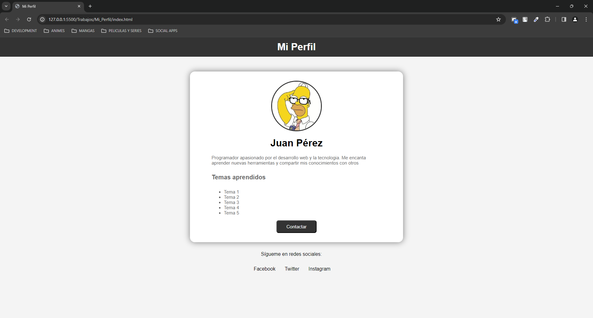
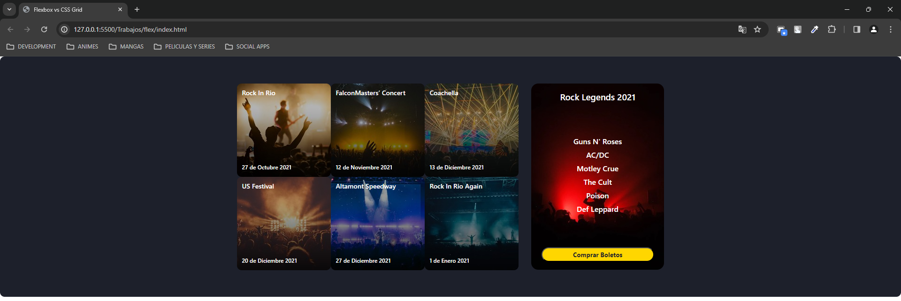
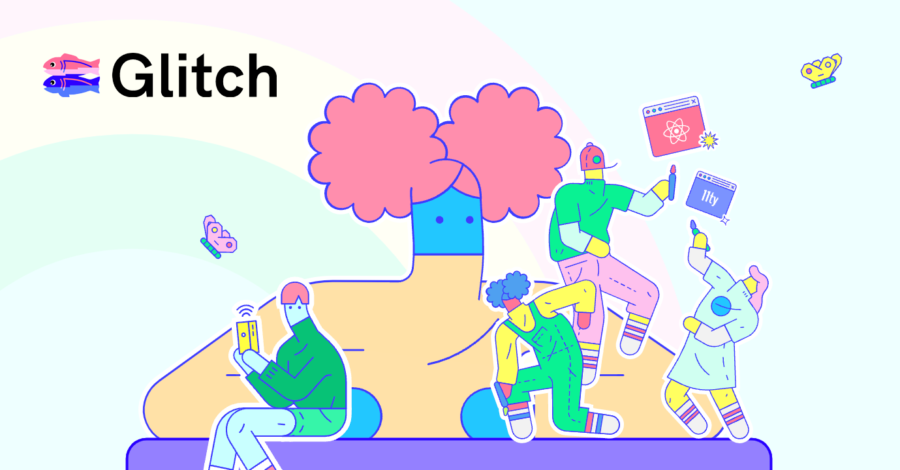

Jose Luis Rodriguez
¿Quién soy?
Soy un estudiante de programacion que aspira a poder lucrarse pudiendo hacer aquello que me apasiona espeo que con este sitio web puedan ver como fue mi avance en la programacion
Todo el mundo esta destinado a la misma desgracia solo aquellos que se arriesgan y no retroceden son capaces de elegir su propio rumbo en la vida.
-Jose Luis Rodriguez
Mis proyectos

Mi perfil
Primer acercamiento a html y css recreando un pagina web en base a una imagen para ir descubriendo y aprendiendo la maquetacion de html y css

Display Flex
Recreacion de una pagina web basada en una imagen utilizando display flex y grid para poder acomodar los elementos

Video Glitch
Video Tutorial explicando como poder desplegar una pagina web estatica con el servicio de hosting de glitch